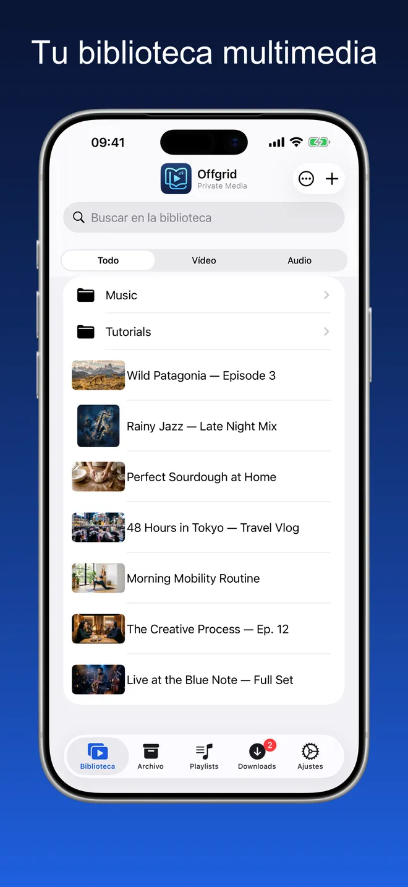
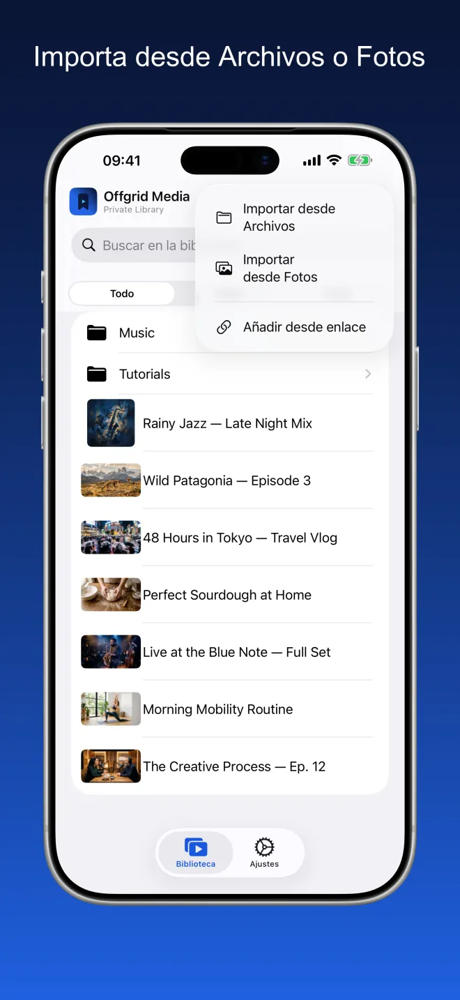
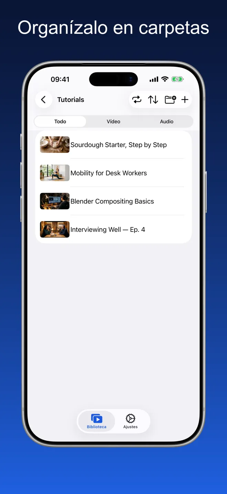
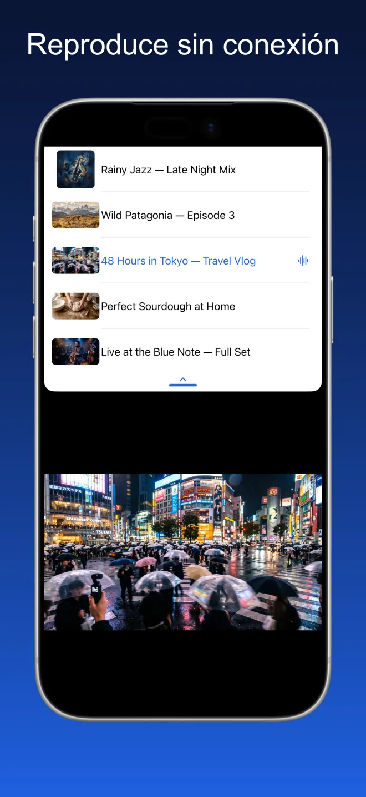
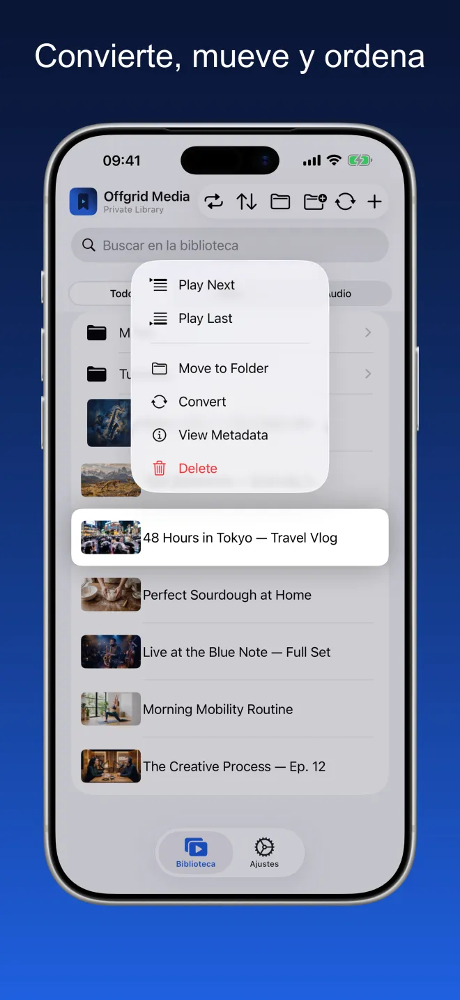
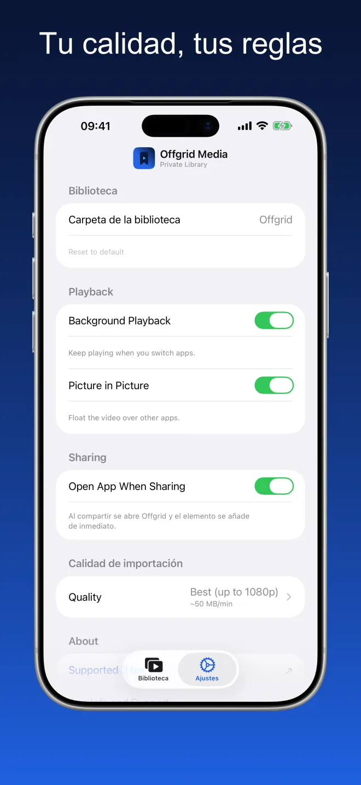

Offgrid Media · Biblioteca privada
Todo lo que guardas,
sin conexión.
Trae los vídeos y audios que ya tienes —desde Archivos, desde Fotos o mediante un enlace que tengas derecho a conservar— y reprodúcelo todo sin conexión, en un único lugar ordenado.
Pruébalo. La red está apagada y tu biblioteca sigue sonando.

Un único lugar ordenado para tus propios archivos
Carpetas, búsqueda y un filtro por vídeo o audio. Las miniaturas salen del propio archivo y se conservan la carátula y los metadatos.





Importa, organiza, reproduce
Importa desde Archivos o Fotos
Organízalo en carpetas
Reproduce sin conexión
Un reproductor de verdad, no una carpeta de archivos
Todo lo de abajo funciona con la red apagada.
Importa desde Archivos y Fotos
Añade vídeos y audios desde iCloud Drive, desde tu dispositivo o desde tu fototeca. Todo llega a tu biblioteca, listo para reproducir.
Organízalo a tu manera
Crea carpetas, mueve elementos entre ellas y busca en todo lo que has guardado. Filtra por vídeo o audio cuando quieras centrarte.
Pensado para el modo sin conexión
Una vez en tu biblioteca, el archivo se queda en tu dispositivo. Sin cargas, sin necesidad de conexión y sin nada transmitido desde ningún sitio.
Un reproductor de verdad
Reproduce en orden o aleatoriamente, retoma donde lo dejaste, prepara la cola y usa imagen dentro de imagen mientras utilizas otras apps. Se conservan la carátula y los metadatos.
Audio en segundo plano
Sigue escuchando al cambiar de app o bloquear la pantalla.
Elige tu calidad
Configura tu calidad preferida una vez en Ajustes: la mejor disponible, 720p, 480p, 360p o solo audio.
Capítulos
El contenido con capítulos muestra una lista de capítulos en la biblioteca y una barra de capítulos en la parte inferior del reproductor, para ir directo a lo que buscas.
Carpetas completas, de una vez
Importa una carpeta y llega con sus subcarpetas intactas: cópiala o muévela desde su ubicación original. Selecciona varios elementos a la vez para añadirlos a una lista, archivarlos, moverlos o eliminarlos.
Solo lo que usas
Desactiva el Archivo o las Listas en Ajustes y desaparecen de la app. No se borra nada: vuelve a activarlos y todo sigue ahí.
Sin cuenta. Sin anuncios. Sin rastreo.
Offgrid lo guarda todo localmente en tu dispositivo. No se sube nada, no se comparte nada y no hace falta ninguna cuenta.
Nada que recopilar, porque no hay adónde enviarlo
Offgrid Media no tiene cuenta ni servidor propio. Su manifiesto de privacidad del App Store declara cero rastreo y cero datos recopilados.
Preguntas frecuentes
No. Una vez que algo está en tu biblioteca vive en tu dispositivo y se reproduce con la red apagada. Al reproducir no se transmite nada, así que no hay cargas ni conexión que perder.
En una carpeta de tu dispositivo, dentro del almacenamiento de la app. Puedes elegir otra carpeta en Ajustes y, como la app es compatible con la app Archivos, puedes ver ahí los mismos archivos. No se sube nada y no hay sincronización en la nube.
Importando desde Archivos (iCloud Drive o el dispositivo), desde tu fototeca, o añadiendo desde un enlace que tengas derecho a conservar: pégalo en la app o usa el menú Compartir de tu navegador y elige Offgrid Media. La importación es la vía principal; el enlace es una comodidad secundaria.
Sí. Activa el audio en segundo plano en Ajustes y la reproducción continúa al cambiar de app o bloquear la pantalla, con título, carátula y controles en la pantalla bloqueada y en el centro de control. El vídeo puede flotar sobre otras apps con imagen dentro de imagen. El vídeo también se reproduce a pantalla completa y, en el iPad, la app sigue sonando junto a otra en Split View.
No. Offgrid Media no tiene cuenta, ni servidor, ni analítica, ni SDK de terceros. Su manifiesto de privacidad del App Store declara cero rastreo y cero datos recopilados. El único permiso que pide son las notificaciones.
Nada. Sin suscripción, sin compras dentro de la app, sin anuncios.
Añade solo contenido que tengas derecho a conservar. El cumplimiento de las condiciones de servicio de cada plataforma y de las leyes aplicables es responsabilidad exclusivamente tuya.
Tu biblioteca. Tu dispositivo. Sin cobertura.
Offgrid Media es gratis, para iPhone y iPad, en 11 idiomas.